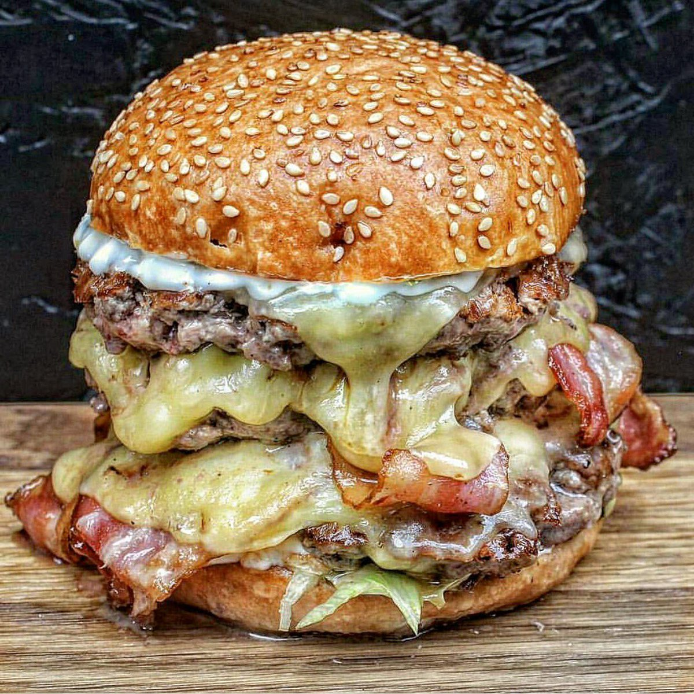
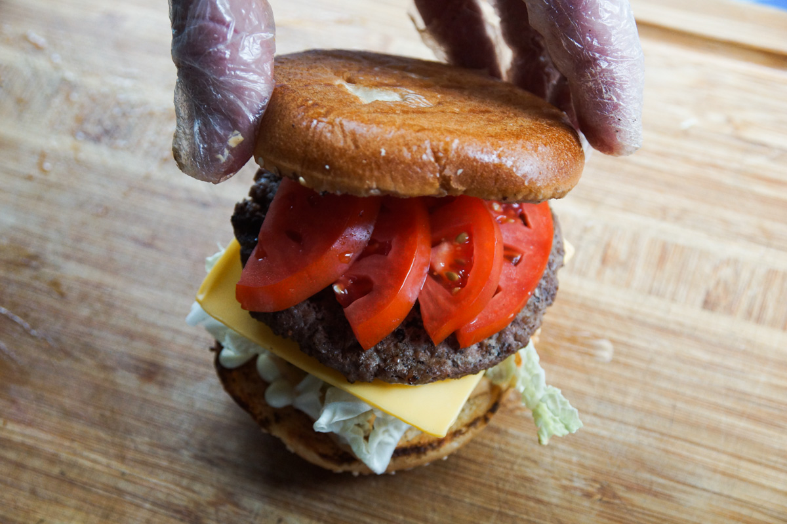
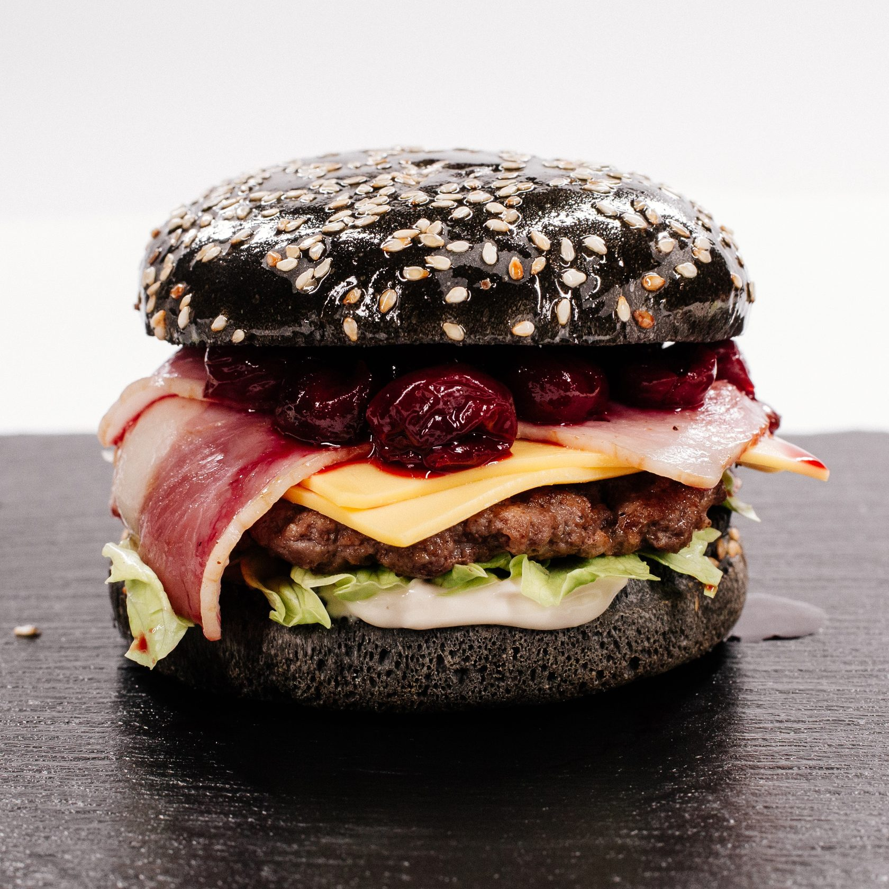
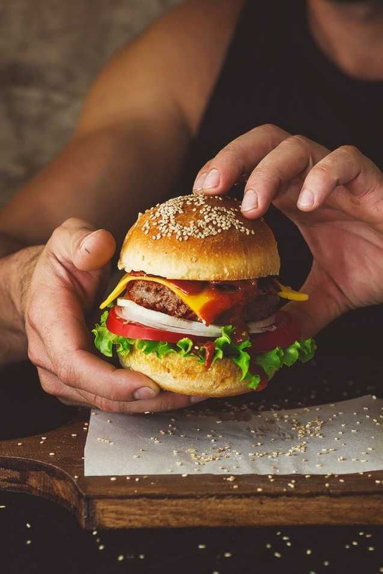

Статьи
- Все самое интересное только у нас -

10 секретов потрясающих бургеров
Читать

13 интересных фактов о бургерах
Читать

Необычные факты про бургеры
Читать

19 малоизвестных фактов о бургере
Читать
/*
TODO: сверстать заголовок страницы и список статей.
в каждой статье:
- картинка
- название
- дата публикации
- рейтинг
- ссылка на статью
- краткое описание
5-10(смотри сама) статей на странице, под ними - пагинация(загугли)
*/